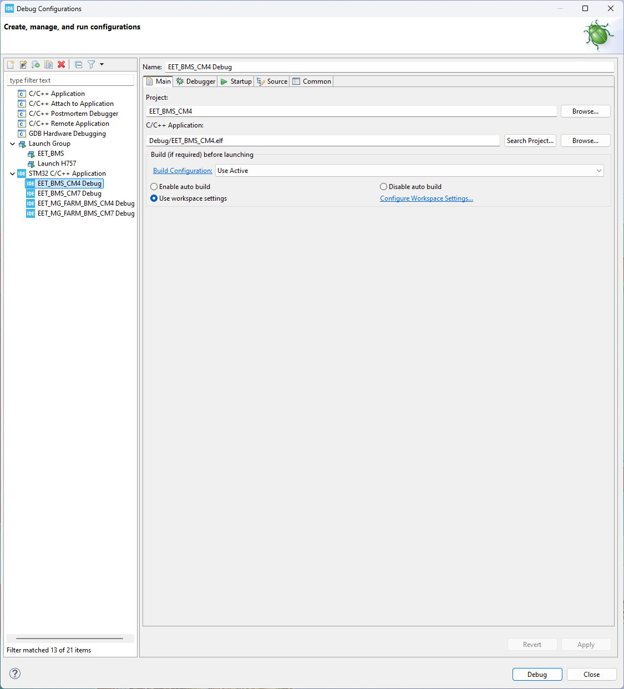
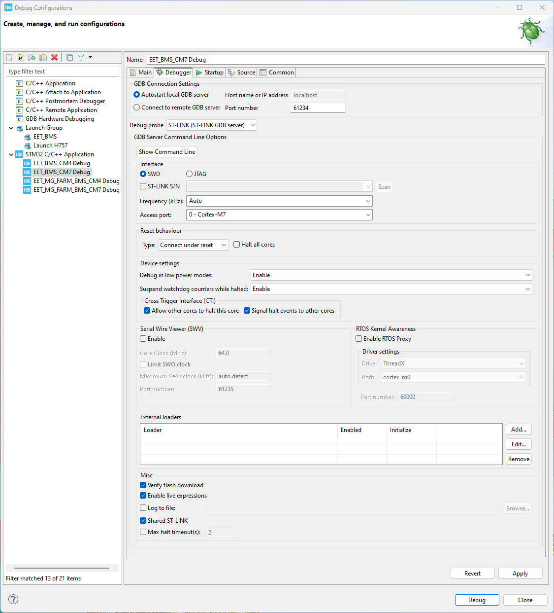
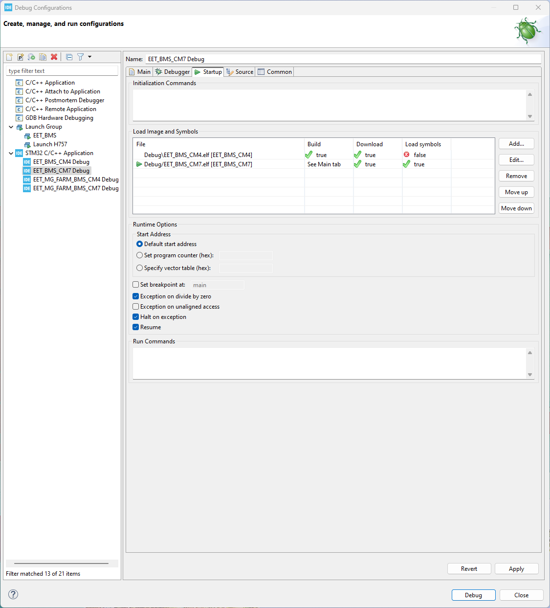

The STM32H755 used in this project is a rather complex dual-core MCU. This leads to some additional configuration required to set up the project to debug properly. Thankfully, ST documented the process in AN5361. Make sure to also deactivate the initial breakpoint in the debug configurations of both MCUs to prevent faults when starting the debug session via the debug group.
Debugging Settings¶
For effective debugging of the BMS, it is essential to correctly modify the Debug Configuration settings. The primary reference for this process is the official documentation from STMicroelectronics.
A key resource is the application note AN5361**: Getting started with projects based on dual-core STM32H7 microcontrollers in STM32CubeIDE.
For the general setting configuration, you can refer to Chapter 3. However, please note that there are specific minor changes required for the BMS project. These project-specific modifications must be applied to ensure compatibility and stability.
CM4¶
For the CM4 are following setting needed:
CM4 Main¶

CM4 Debugger¶

CM4 Startup¶

CM7¶
For the CM7 are following setting needed:
CM7 Main¶

CM7 Debugger¶

CM7 Startup¶
in this setting you have to add both CPUs.

Launch Group¶
To debug the STM32H7, you have two primary options for managing the dual-core architecture (Cortex-M7 and Cortex-M4):
Sequential Debugging: You have the possibility to debug the cores manually by starting with the CM7 first, followed by the CM4.
Launch Group (Recommended): Alternatively, you can create a “Launch Group” within STM32CubeIDE. Using a launch group allows both processors to start successively in an automated manner. When setting up a launch group, it is critical to follow the correct order: you must add the CM7 first and then the CM4.